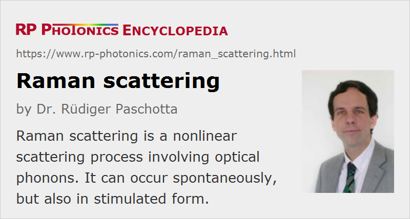

Raman Scattering
Definition: a nonlinear scattering process involving optical phonons
More general terms: scattering
German: Raman-Streuung
Categories: fiber optics and waveguides, nonlinear optics, physical foundations
How to cite the article; suggest additional literature
Author: Dr. Rüdiger Paschotta
The nonlinear response of a transparent optical medium to the optical intensity of light propagating through the medium is very fast, but not instantaneous. In particular, a non-instantaneous response is caused by vibrations of the crystal (or glass) lattice. When these vibrations are associated with optical phonons, the effect is called Raman scattering, whereas acoustical phonons are associated with Brillouin scattering. When e.g. two laser beams with different wavelengths (and normally with the same polarization direction) propagate together through a Raman-active medium, the longer wavelength beam (called the Stokes wave) can experience optical amplification at the expense of the shorter wavelength beam. In addition, lattice vibrations are excited, leading to a temperature rise. The Raman gain for the longer wavelength beam can be exploited in Raman amplifiers and Raman lasers. That gain can be substantial if the Stokes shift corresponds to a frequency difference of several terahertz.
Raman scattering can occur not only in solid materials, but also in liquids or gases. For example, molecular glasses have vibrational/rotational excitations, and the observed Stokes shifts are related to those.
In the Raman scattering process, one pump photon is converted into one lower-energy signal photon, and the difference of photon energies is carried away by a phonon (a quantum of the lattice vibrations). In principle, it is also possible that an already existing phonon interacts with a pump photon to generate one higher-energy photon, belonging to an anti-Stokes wave at a shorter wavelength. That process, however, is usually weak, particularly at low temperatures. Note, however, that strong anti-Stokes light can also arise from four wave mixing if that process is phase-matched.
When the intensity of the generated Stokes wave becomes sufficiently high, that wave may again act as the pump for a further Raman process. Particularly in some Raman lasers, it is possible to observe several Stokes orders (cascaded Raman lasers).
Raman scattering is also called inelastic scattering, because the involved loss of photon energy is somewhat reminiscent of losses of kinetic energy in collisions of mechanical objects.
Apart from the mentioned stimulated Raman scattering effect, which can be described with classical physics, there is also spontaneous Raman scattering, caused by quantum effects.
Raman scattering can also occur within the broad optical spectrum of, e.g., an ultrashort optical pulse, effectively shifting the spectral envelope of the pulse towards longer wavelengths (Raman self-frequency shift, also called soliton self-frequency shift).
Some typical Raman-active media are
- certain molecular gases, e.g. hydrogen (H2), methane (CH4) and carbon dioxide (CO2), used in, e.g., high pressure cells for Raman shifters
- solid-state media such as glass fibers or certain crystals, e.g. barium nitride = Ba(NO3)2, various tungstates such as KGd(WO4)2 = KGW and KY(WO4)2 = KYW, and synthetic diamond
The Raman effect occurs together with the Kerr effect, which results from the (nearly) instantaneous response of the electrons.


In optical fiber devices such as fiber amplifiers for intense pulses, Raman scattering can be detrimental: it can transfer much of the pulse energy into a wavelength range where laser amplification does not occur. This effect can limit the peak power achievable with such devices. Even in continuous-wave high-power fiber lasers and amplifiers, Raman scattering can be a problem. There are, however, various kinds of solutions to such problems, including chirped-pulse amplification and the use of special fiber designs (see e.g. [9]) which suppress Raman scattering by attenuating the Raman-shifted wavelength component.
In bulk media, such as certain nonlinear crystal materials, unwanted stimulated Raman scattering can occur even via non-collinear phase matching, if the pump intensity is rather high and the beam width is large enough. This can occur e.g. in optical parametric generators operated with intense pump pulses.
Raman scattering is also used in Raman spectroscopy. In particular, it allows one to investigate the vibrational modes of solid materials and vibrational/rotational states of molecules.
Questions and Comments from Users
Here you can submit questions and comments. As far as they get accepted by the author, they will appear above this paragraph together with the author’s answer. The author will decide on acceptance based on certain criteria. Essentially, the issue must be of sufficiently broad interest.
Please do not enter personal data here; we would otherwise delete it soon. (See also our privacy declaration.) If you wish to receive personal feedback or consultancy from the author, please contact him e.g. via e-mail.
By submitting the information, you give your consent to the potential publication of your inputs on our website according to our rules. (If you later retract your consent, we will delete those inputs.) As your inputs are first reviewed by the author, they may be published with some delay.
Bibliography
| [1] | V. V. Raman and K. S. Krishnan, “A new type of secondary radiation”, Nature 121, 501 (1928), doi:10.1038/121501c0 |
| [2] | G. Eckhardt et al., “Stimulated emission of Stokes and anti-Stokes Raman lines from diamond, calcite and alpha-sulfur single crystals”, Appl. Phys. Lett. 3, 137 (1963), doi:10.1063/1.1753903 (first report of stimulated Raman scattering in insulating crystals) |
| [3] | N. Bloembergen, “The stimulated Raman effect”, Am. J. Phys. 35 (11), 989 (1967), doi:10.1119/1.1973774 |
| [4] | R. G. Smith, “Optical power handling capacity of low loss optical fibers as determined by stimulated Raman and Brillouin scattering”, Appl. Opt. 11 (11), 2489 (1972), doi:10.1364/AO.11.002489 |
| [5] | K. J. Blow and D. Wood, “Theoretical description of transient stimulated Raman scattering in optical fibers”, IEEE J. Quantum Electron. 25 (12), 2665 (1989), doi:10.1109/3.40655 |
| [6] | R. H. Stolen et al., “Raman response function of silica-core fibers”, J. Opt. Soc. Am. B 6 (6), 1159 (1989), doi:10.1364/JOSAB.6.001159 |
| [7] | D. Hollenbeck and C. D. Cantrell, “Multiple-vibrational-mode model for fiber-optic Raman gain spectrum and response function”, J. Opt. Soc. Am. B 19 (12), 2886 (2002), doi:10.1364/JOSAB.19.002886 |
| [8] | J. Santhanam and G. P. Agrawal, “Raman-induced spectral shifts in optical fibers: general theory based on the moment method”, Opt. Commun. 222, 413 (2003), doi:10.1016/S0030-4018(03)01561-X |
| [9] | J. M. Fini et al., “Distributed suppression of stimulated Raman scattering in an Yb-doped filter-fiber amplifier”, Opt. Lett. 31 (17), 2550 (2006), doi:10.1364/OL.31.002550 |
| [10] | Q. Lin and G. P. Agrawal, “Raman response function for silica fibers”, Opt. Lett. 31 (21), 3086 (2006), doi:10.1364/OL.31.003086 |
| [11] | D. J. Spence and R. P. Mildren, “Mode locking using stimulated Raman scattering”, Opt. Express 15 (13), 8170 (2007), doi:10.1364/OE.15.008170 |
| [12] | X. Ma et al., “Propagation-length independent SRS threshold in chirally-coupled-core fibers”, Opt. Express 19 (23), 22575 (2011), doi:10.1364/OE.19.022575 |
| [13] | R. Paschotta, "Dependence on Raman conversion on the optical bandwidth" (2018) |
| [14] | G. P. Agrawal, Nonlinear Fiber Optics, 4th edn., Academic Press, New York (2007) |
| [15] | R. Paschotta, case studies involving Raman scattering: soliton self-frequency shift, SRS in an Yb-doped fiber amplifier and in a multimode fiber. |
See also: Raman gain, Raman amplifiers, Raman lasers, nonlinearities, Stokes shift, Brillouin scattering, Kerr effect, hyper Raman scattering, Raman spectroscopy, The Photonics Spotlight 2010-03-03
and other articles in the categories fiber optics and waveguides, nonlinear optics, physical foundations
|  |
If you like this page, please share the link with your friends and colleagues, e.g. via social media:
These sharing buttons are implemented in a privacy-friendly way!